Chapter 10 Assessing LINE
We know from the lectures that there are multiple assumptions underpinning whether a regression is a good model or not - especially LINE assumptions (as described in Online STAT-462 - Lesson 4). Regression diagnostics are a set of tools we can use to assess these assumptions. All the example datasets are from the online textbook and can be downloaded there.
10.1 Basic code
It can be difficult looking at the raw data to assess whether many of the assumptions are true or not. So in this case we can look at residual plots.
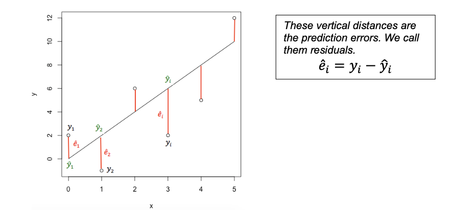
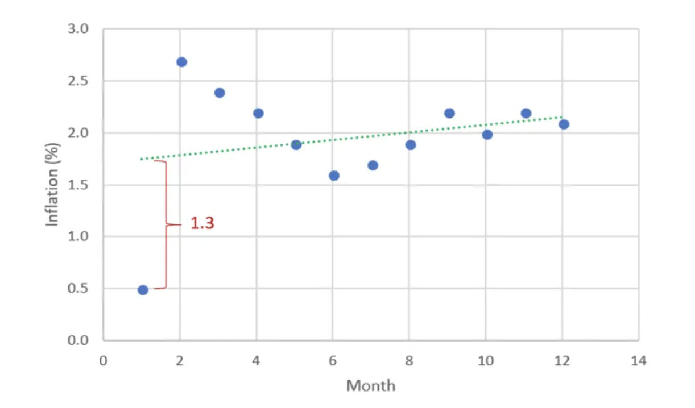
Still confused? See
10.1.1 Adding a new column with the residuals
We can add a new column with the residuals.
Expand for more details
Imagine you are interested in determining whether or not alcohol consumption was linearly related to muscle strength. You measured the total lifetime consumption of alcohol (x) on a random sample of n = 50 alcoholic men. They also measured the strength (y) of the deltoid muscle in each person’s left arm, then created a linear model to forecast strength.
The predicted value is the y-value at the line for each point, strength is the actual measured strength and residual is the difference between the two.
alcoholdata <- read.csv("alcoholstrength.csv")
mymodel <- lm(strength~alcohol,data=alcoholdata)
# now add in the predicted and residual values
alcoholdata$strength_predicted <- mymodel$fitted.values
alcoholdata$residuals <- mymodel$residuals
head(alcoholdata)## alcohol strength strength_predicted residuals
## 1 36.2 1000 1565.911 -565.9109
## 2 39.7 1000 1462.357 -462.3570
## 3 39.5 1080 1468.274 -388.2744
## 4 18.2 1220 2098.474 -878.4739
## 5 29.2 1310 1773.019 -463.0187
## 6 32.5 1400 1675.382 -275.3822See if you can match the point in red to the first value above and understand the numbers.
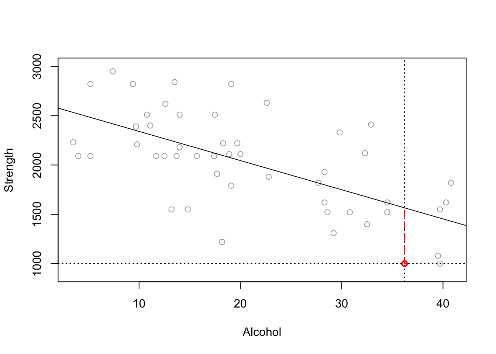
10.1.2 Code for plotting the residuals
Instead, we plot at the residuals vs the fitted values, which often show a pattern much more clearly. If you’re not sure what I mean by these words, go back and read from “what are residuals”
The code to do this is pretty simple from the olsrr package. If this is the scatterplot:
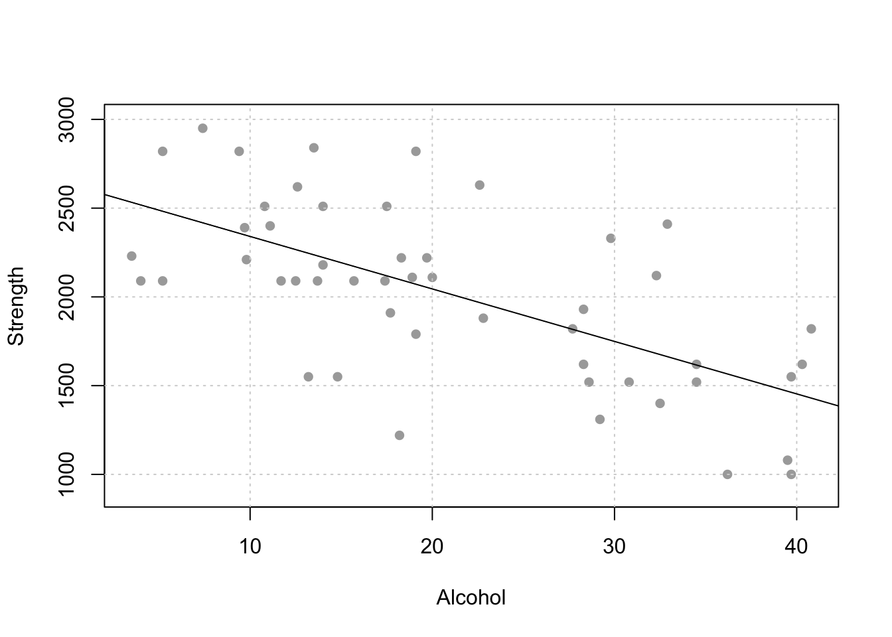
Here are the raw residuals
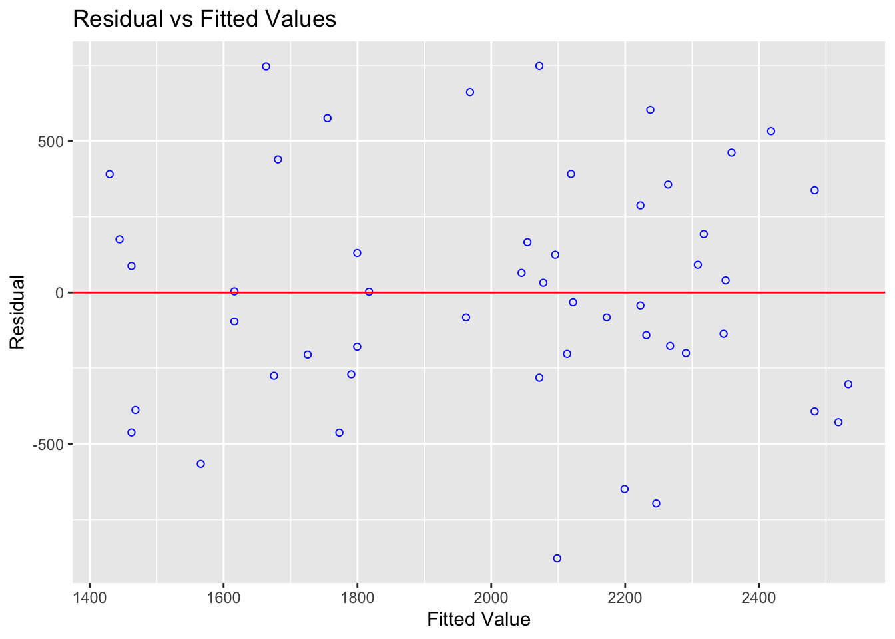
and here are the residuals, but this time they are normalised (e.g. the residuals are in “standard deviations away from the mean”).
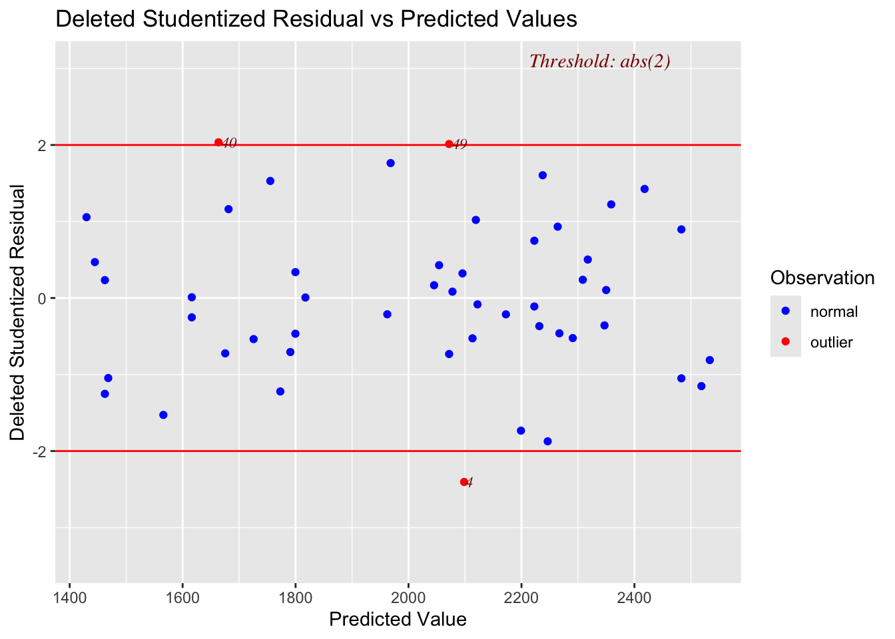
10.2 Checking LINE
10.2.1 Checking Linearity
THE AIM HERE IS TO SEE IF A CURVE (or pattern) WOULD FIT THE DATA BETTER THAN A LINE. JUST RANDOM POINTS IS OK, A CURVE/DINOSAUR IS BAD.

We do this by looking at the residuals vs fits plot.
Expand to see an example
The goal of data-science is often to find the ‘best’ model that fits your data AKA the one with the smallest residuals. If your underlying dataset is not linear, then we probably want to choose a different model than linear data.
However, in real life, it can often be difficult to assess whether the fit is linear by looking at the scatterplot alone. For example, using another dataset from the textbook, your mind might think this is linear.
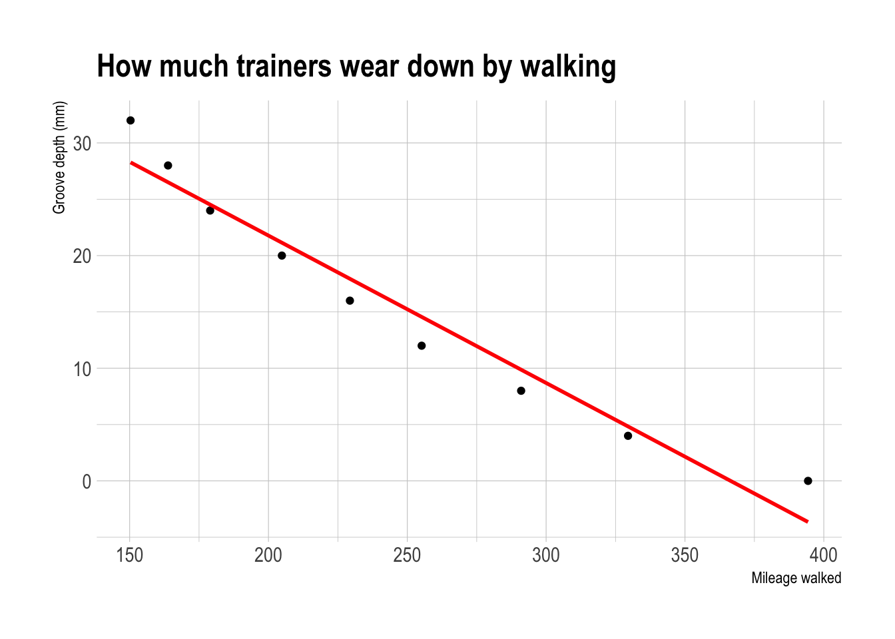
Figure 10.1: This looks relatively linear, but….
and calculate the residuals.
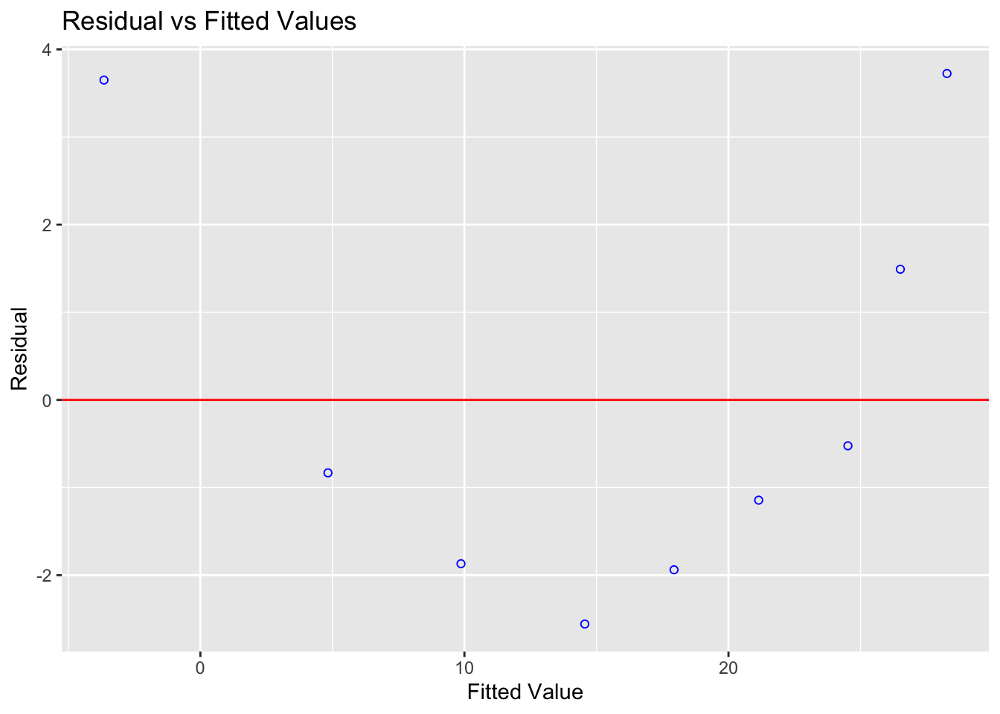
Figure 10.2: A parabola would clearly fit the data better than a straight line
Let’s compare this residual plot to the strength/alcohol example from the section above (I include all the code for completeness). You can see in the treadwear data, the residuals depart from 0 in a very systematic manner. They are clearly positive for small x values, negative for medium x values, and positive again for large x values.
Clearly, a non-linear model would better describe the relationship between the two variables.
**IF IT’S LINEAR, WE SHOULD SEE A GENERAL CLOUD OF POINTS WITH NO CLEAR PATTERN. IF IT’S NOT LINEAR, YOU MIGHT SEE A CURVE OR A PATTERN (or a dinosaur..)
10.2.2 Checking Equal Variance/homoscadisity
Look at the cloud of points - they should stay roughly the same distance away either side of your line
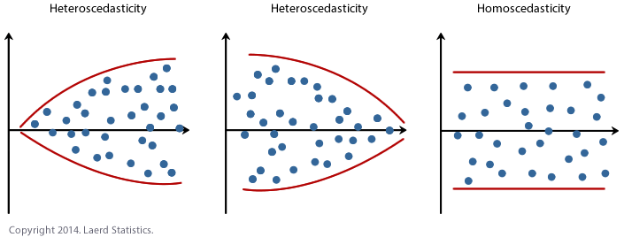
We do this by looking at the residuals vs fits plot AND by looking at a significance test.
Expand to read more about how to do this
10.2.2.1 Residual vs fits plots for equal variance checks
This can also be hard to see in the raw scatterplot, so again we use the residual vs fits plot. Look for the dots “fanning out” or bow-tie shapes vs a random cloud.
Heres how some data appears in the raw scatterplot and the residual fits plot.
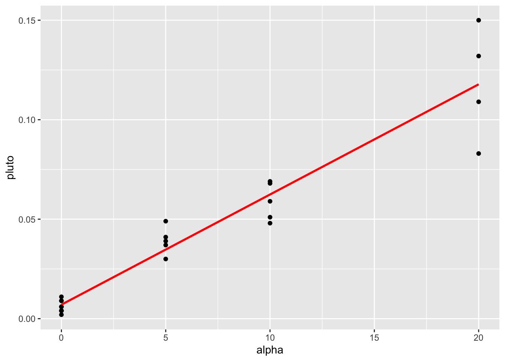
Figure 10.3: This data breaks equal variance

You can clearly see here that for low values of the fitted data, there is not much variance - but there is a lot of variance as the data expands.
10.2.2.2 Statistical Tests for non-equal variance
You can also run statistical tests, explained in more detail here: https://rpubs.com/tskam/Session06
For example, this is the heteroskadisity F-Test. There is also another test available, the Breusch Pagan Test - but this relies on the residuals being normally distributed.
# F test - assumes residuals are independent and identically distributed (i.i.d.)
ols_test_f(alpha_model)##
## F Test for Heteroskedasticity
## -----------------------------
## Ho: Variance is homogenous
## Ha: Variance is not homogenous
##
## Variables: fitted values of alpha
##
## Test Summary
## ----------------------------
## Num DF = 1
## Den DF = 21
## F = 16.37716
## Prob > F = 0.0005808712There is a small probability of seeing this sample result if H0 is true and the underlying population has equal variance. So I have enough evidence to reject H0 and suggest that maybe the underlying population does not have equal variance.
In this case, we can see that, similar to the plot, we need to worry about unequal variance. (note, updated from a typo before where I used a different dataset - this is now correct)
10.2.3 Checking Normality
Again, we are testing whether the RESIDUALS are normal around the regression line
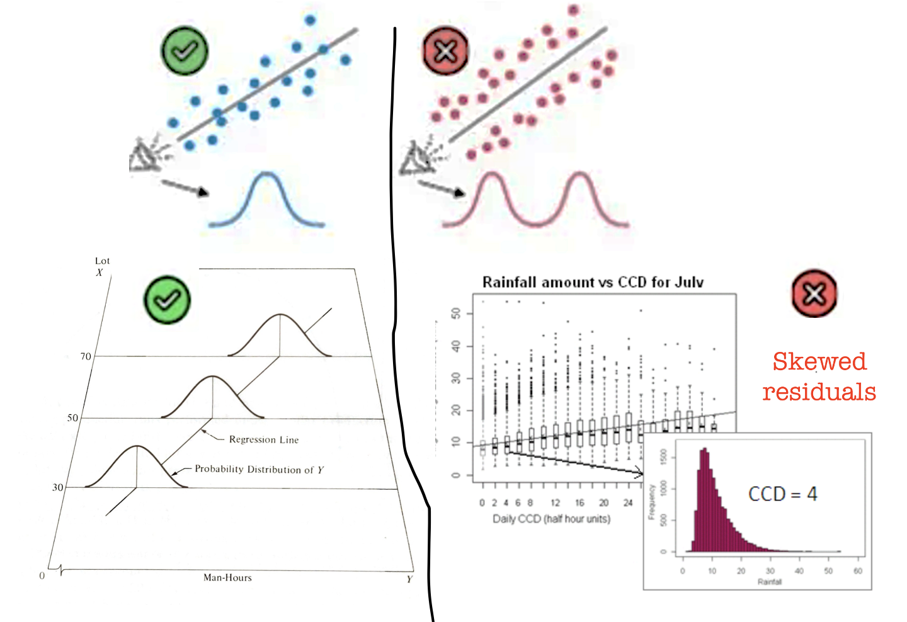
To get the best estimates of parameters such as B0 and B1, the residuals must be normally distributed around the regression line. However, this has a much smaller effect typically than non-linearity or breaking assumptions of independence.
Breaking normality is only important in the calculation of p values for significance testing and confidence intervals, but this is only a problem when the sample size is small. When the sample size is larger (>200), the Central Limit Theorem ensures that the distribution of residuals will approximate normality when calculating parameters.
So never throw away your data if it breaks normality. But it’s good to take a look.
First, read this to see how the different tests look: https://online.stat.psu.edu/stat501/lesson/4/4.6
Let’s go back to our original test data:
mymodel <- lm(strength~alcohol,data=alcoholdata)
plot(alcoholdata$alcohol,alcoholdata$strength,xlab="Alcohol",ylab="Strength",pch=16)
abline(mymodel)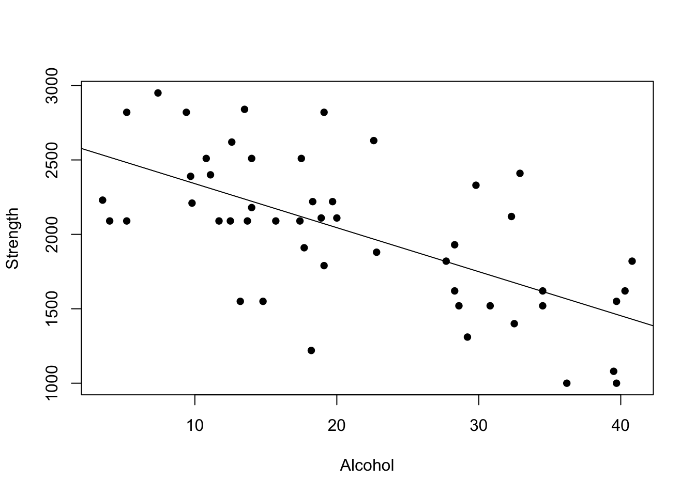
To test normality, we can use OLSRR to:
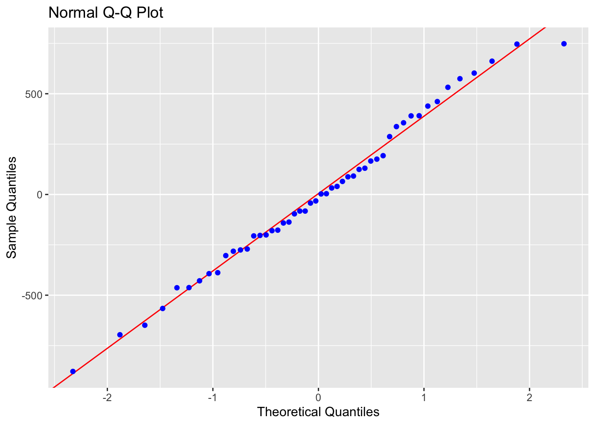
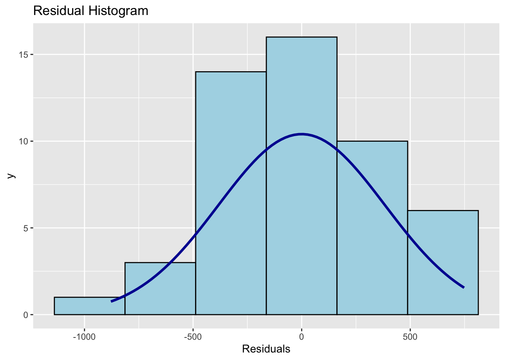
## -----------------------------------------------
## Test Statistic pvalue
## -----------------------------------------------
## Shapiro-Wilk 0.9877 0.8767
## Kolmogorov-Smirnov 0.0502 0.9990
## Cramer-von Mises 4.1667 0.0000
## Anderson-Darling 0.1699 0.9289
## -----------------------------------------------In this case, our residuals look very normal.
There are several tests available, look at papers such as these to understand why and which is best - https://www.ncbi.nlm.nih.gov/pmc/articles/PMC3693611/